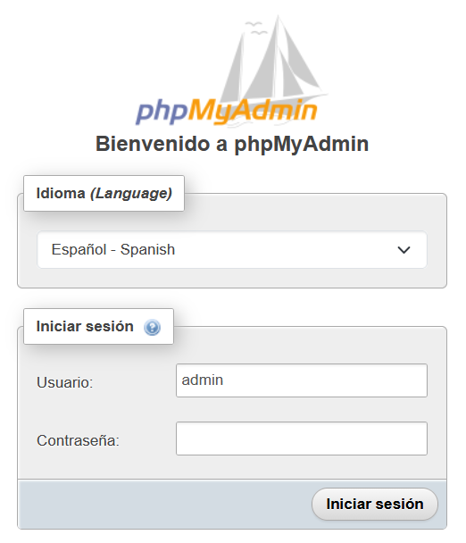
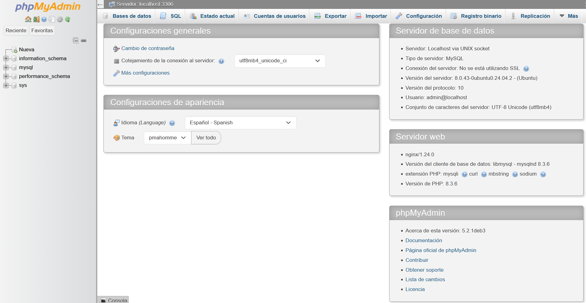

phpmyadmin¶
Instal·lació¶
Tot i que molts usuaris necessiten la funcionalitat d’un sistema de gestió de bases de dades com MySQL, poden no sentir-se còmodes interactuant amb el sistema únicament des del prompt de MySQL.
PhpMyAdmin va ser creat perquè els usuaris puguen interactuar amb MySQL mitjançant una interfície web.
Requisits previs
- Un servidor linux (Ubuntu). Aquest servidor ha de tenir un usuari no root amb privilegis administratius i un tallafoc configurat amb ufw.
- Una pila LEMP (Linux, Nginx, MySQL i PHP) instal·lada al servidor Ubuntu.
A més, hi ha consideracions importants de seguretat en utilitzar programari com phpMyAdmin ja que:
- Es comunica directament amb la instal·lació de MySQL
- Maneja l’autenticació usant credencials de MySQL
- Executa i torna resultats per a consultes SQL arbitràries
PhpMyAdmin és una aplicació PHP àmpliament desplegada que és freqüentment atacada, mai no has d’executar phpMyAdmin en sistemes remots a través d’una connexió HTTP simple.
Pas 1 — Instal·lant phpMyAdmin
Podeu utilitzar APT per instal·lar phpMyAdmin des dels repositoris predeterminats d’Ubuntu.
Com que el teu usuari sudo no root, actualitza l’índex de paquets del teu servidor si no ho has fet recentment:
sudo apt update
Després d’això, podeu instal·lar el paquet phpmyadmin. Juntament amb aquest paquet, la documentació oficial també recomana que instal·leu algunes extensions PHP al vostre servidor per habilitar certes funcionalitats i millorar-ne el rendiment.
En pràctiques anteriors sobre la pila LEMP, s’hauran instal·lat diversos d’aquests mòduls juntament amb el paquet php. No obstant això, es recomana que també instal·leu aquests paquets:
- php-mbstring: Un mòdul per gestionar cadenes no ASCII i convertir cadenes a diferents codificacions
- php-zip: Aquesta extensió suporta la càrrega de fitxers .zip a phpMyAdmin
- php-gd: Habilita el suport per a la Biblioteca Gràfica GD
- php-json: Proporciona a PHP suport per a la serialització JSON
- php-curl: Permet que PHP interactue amb diferents tipus de servidors usant diferents protocols
Executeu l’ordre següent per instal·lar aquests paquets al vostre sistema. Tingueu en compte, però, que el procés d’instal·lació requereix que prengueu algunes decisions per configurar phpMyAdmin correctament.
sudo apt install phpmyadmin php-mbstring php-zip php-gd php-json php-curl
Aquestes són les opcions a triar per a configurar la instal·lació correctament:
-
Per a la selecció del servidor, trieu apache2
Advertència: Quan aparegui el prompt, “apache2” està ressaltat, però no seleccionat. Si no premeu ESPAI per seleccionar Apache, l’instal·lador no mourà els fitxers necessaris durant la instal·lació. Premeu ESPAI, TAB i després ENTER per seleccionar Apache.
-
Selecciona Sí quan se’t pregunte si vols utilitzar dbconfig-common per configurar la base de dades.
- Després se us demanarà que escolliu i confirmeu una contrasenya d’aplicació MySQL per a phpMyAdmin.
Per defecte, la ruta d’instal·lació de phpmyadmin és a /usr/share i el podeu afegir amb el paràmetre location per configurar-lo a NGINX. També pots decidir si implementar-lo per a un lloc concret modificant el seu fitxer de configuració o afegir-lo a la configuració global per accedir amb l’adreça, creant un fitxer de configuració.
El codi a inserir en el site, disponible en /etc/nginx/sites-available/ seria semblant a aquest:
location /phpmyadmin {
root /usr/share/;
index index.php index.html index.htm;
location ~ ^/phpmyadmin/(.+\.php)$ {
try_files $uri =404;
root /usr/share/;
fastcgi_pass unix:/run/php/php8.3-fpm.sock;
fastcgi_index index.php;
fastcgi_param SCRIPT_FILENAME $document_root$fastcgi_script_name;
include /etc/nginx/fastcgi_params;
}
location ~* ^/phpmyadmin/(.+\.(jpg|jpeg|gif|css|png|js|ico|html|xml|txt))$ {
root /usr/share/;
}
}
Finalment, aplicar la configuració o reiniciar el servei web:
sudo systemd restart nginx
phpMyAdmin ara està instal·lat i configurat per treballar amb Nginx.
Si accedim al lloc configurat, a la url de phpmyadmin veurem:

{kind=link}
No obstant això, abans d’iniciar sessió i començar a interactuar amb les bases de dades MySQL, caldrà assegurar-se que els usuaris de MySQL tinguen els privilegis necessaris per interactuar amb el programa.
Autenticació i privilegis d’usuaris¶
Quan instal·les phpMyAdmin al servidor, automàticament es crea un usuari de base de dades anomenat phpmyadmin, que realitza certs processos subjacents per al programa. En lloc d’iniciar sessió com aquest usuari amb la contrasenya administrativa que vas configurar durant la instal·lació, es recomana que inicies sessió com el teu usuari root de MySQL o com un usuari dedicat a gestionar bases de dades a través de la interfície de phpMyAdmin.
Configuració de l’Accés per Contrasenya per al root de MySQL
En sistemes Ubuntu que executen MySQL 5.7 (i versions posteriors), l’usuari root de MySQL està configurat per autenticar-se usant el plugin auth_socket per defecte en lloc d’una contrasenya. Això permet més seguretat i usabilitat en molts casos, però també pot complicar les coses quan necessites permetre que un programa extern, com phpMyAdmin, accedisca a l’usuari.
Per iniciar sessió a phpMyAdmin com el vostre usuari root de MySQL, necessitareu canviar el vostre mètode d’autenticació d’auth_socket a un que utilitzeu una contrasenya, si encara no ho heu fet. Per fer això, obre el prompt de MySQL des del teu terminal:
sudo mysql
A continuació, verifica quin mètode d’autenticació utilitza cadascun dels teus comptes d’usuari de MySQL amb l’ordre següent:
SELECT user,authentication_string,plugin,host FROM mysql.user;
Eixida:
+------------------+------------------------------------------------------------------------+-----------------------+-----------+
| user | authentication_string | plugin | host |
+------------------+------------------------------------------------------------------------+-----------------------+-----------+
| debian-sys-maint | $A$005$I:jOry?]Sy<|qhQRj3fBRQ43i4UJxrpm.IaT6lOHkgveJjmeIjJrRe6 | caching_sha2_password | localhost |
| mysql.infoschema | $A$005$THISISACOMBINATIONOFINVALIDSALTANDPASSWORDTHATMUSTNEVERBRBEUSED | caching_sha2_password | localhost |
| mysql.session | $A$005$THISISACOMBINATIONOFINVALIDSALTANDPASSWORDTHATMUSTNEVERBRBEUSED | caching_sha2_password | localhost |
| mysql.sys | $A$005$THISISACOMBINATIONOFINVALIDSALTANDPASSWORDTHATMUSTNEVERBRBEUSED | caching_sha2_password | localhost |
| phpmyadmin | $A$005$?#{Z?`gN!c2az)}V-INCWXSuVdqB9zWteH1IkZfTe/rOLgVhSzEMM9R3G6K9 | caching_sha2_password | localhost |
| root | | auth_socket | localhost |
+------------------+------------------------------------------------------------------------+-----------------------+-----------+
6 rows in set (0.00 sec)
Aquest exemple d’eixida indica que l’usuari root s’autentica usant el plugin auth_socket. Per configurar el compte root perquè s’autentique amb una contrasenya, executa la següent ordre ALTER USER. Assegureu-vos de canviar password per una contrasenya segura de la vostra elecció:
ALTER USER 'root'@'localhost' IDENTIFIED WITH 'caching_sha2_password' BY 'password';
Nota: La declaració ALTER USER anterior configura l’usuari root de MySQL perquè s’autentique amb el plugin
caching_sha2_password. Segons la documentació oficial de MySQL, caching_sha2_password és el connector d’autenticació preferit de MySQL, ja que proporciona una encriptació de contrasenyes més segura que l’antic, però encara àmpliament utilitzat,mysql_native_password.
Tot i això, algunes versions de PHP no funcionen de manera fiable amb caching_sha2_password. PHP ha informat que aquest problema es va solucionar a partir de PHP 7.4, però si trobes un error en intentar iniciar sessió a phpMyAdmin més endavant, és possible que vulgues configurar root perquè s’autentique amb mysql_native_password al seu lloc:
ALTER USER 'root'@'localhost' IDENTIFIED WITH 'mysql_native_password' BY 'password';
Després verifica novament els mètodes d’autenticació dels teus usuaris per confirmar que root ja no s’autentica usant el plugin auth_socket:
SELECT user,authentication_string,plugin,host FROM mysql.user;
Eixida:
+------------------+------------------------------------------------------------------------+-----------------------+-----------+
| user | authentication_string | plugin | host |
+------------------+------------------------------------------------------------------------+-----------------------+-----------+
| debian-sys-maint | $A$005$I:jOry?]Sy<|qhQRj3fBRQ43i4UJxrpm.IaT6lOHkgveJjmeIjJrRe6 | caching_sha2_password | localhost |
| mysql.infoschema | $A$005$THISISACOMBINATIONOFINVALIDSALTANDPASSWORDTHATMUSTNEVERBRBEUSED | caching_sha2_password | localhost |
| mysql.session | $A$005$THISISACOMBINATIONOFINVALIDSALTANDPASSWORDTHATMUSTNEVERBRBEUSED | caching_sha2_password | localhost |
| mysql.sys | $A$005$THISISACOMBINATIONOFINVALIDSALTANDPASSWORDTHATMUSTNEVERBRBEUSED | caching_sha2_password | localhost |
| phpmyadmin | $A$005$?#{Z?`gN!c2az)}V-INCWXSuVdqB9zWteH1IkZfTe/rOLgVhSzEMM9R3G6K9 | caching_sha2_password | localhost |
| root | $A$005$3y�y|Z?'_[} ZyVHuESVwNmjKWOH/ndETwS.Kty0IH7UfiXjOfVvyWroy4a. | caching_sha2_password | localhost |
+------------------+------------------------------------------------------------------------+-----------------------+-----------+
6 rows in set (0.00 sec)
Configuració de l’Accés per Contrasenya per a un Usuari Dedicat de MySQL
Alternativament, alguns poden trobar que sadapta millor al seu flux de treball connectar-se a phpMyAdmin amb un usuari dedicat. Per fer això, accedim a l’intèrpret d’ordres de MySQL:
sudo mysql
Si tens habilitada l’autenticació per contrasenya per al teu usuari root, com es descriu a la secció anterior, necessitaràs executar la següent ordre i ingressar la teua contrasenya quan se’t demani per connectar-te:
mysql -u root -p
Crea un nou usuari i assigna-li una contrasenya segura:
CREATE USER 'admin'@'localhost' IDENTIFIED BY 'password';
Després, atorgueu al nou usuari els privilegis apropiats. Per exemple, podríeu atorgar a l’usuari privilegis sobre totes les taules dins de la base de dades, així com el poder d’afegir, canviar i eliminar privilegis d’usuari, amb aquesta ordre:
GRANT ALL PRIVILEGES ON *.* TO 'admin'@'localhost' WITH GRANT OPTION;
Després d’això, aplicar els canvis amb:
flush privileges;
Eixir de l’intèrpret d’ordres de MySQL:
exit
http://your_domain_or_IP/phpmyadmin

{kind=link}
Protecció¶
phpMyAdmin és un objectiu popular per als atacants, i has de tenir una cura especial per prevenir l’accés no autoritzat.
Per configurar l’autenticació per a una web o un directori en NGINX, podeu utilitzar la utilitat htpasswd d’Apache per emmagatzemar les contrasenyes dels usuaris. Per a fer-ho utilitzarem el mòdul ngx_http_auth_basic_module de NGINX i les directives auth_basic i auth_basic_user_file. La documentació oficial la tens fent clic ací.
Instal·lar htpasswd
Primer caldrà instal·lar el paquet d’utilitats d’Apache que inclou htpasswd:
sudo apt install apache2-utils -y
Utilitzar htpasswd
Una vegada instal·lat, podràs utilitzar htpasswd per emmagatzemar les credencials dels usuaris. Per fer-ho executa:
sudo htpasswd -c /etc/nginx/.htpasswd nom_usuari
Demanarà la introducció d’una contrasenya per a l’usuari nom_usuari i per afegir-hi més usuaris, elimina l’opció -c de crear fitxer:
sudo htpasswd /etc/nginx/.htpasswd altre_nom_usuari
Posteriorment, haureu d’editar el site per implementar el fitxer.
Configurar autenticació en un site de NGINX
A la configuració del site, s’afegeix en el location del directori a protegir:
auth_basic "Accés restringit";
auth_basic_user_file /etc/nginx/.htpasswd;
Un vegada agregades les directives auth_basic i auth_basic_user_file al fitxer de configuració de NGINX, guarda el fitxer i recarrega la configuració perquè els canvis tinguin efecte:
sudo nginx -s reload
Podràs accedir al lloc web protegit mitjançant autenticació. Quan intenteu accedir a la pàgina, se us demanarà que introduïu un nom d’usuari i una contrasenya vàlids del fitxer htpasswd.
Protegir el fitxer htpasswd
És important recordar que el fitxer htpasswd conté informació sensible, com ara els noms d’usuari i les contrasenyes dels usuaris. Per tant, t’has d’assegurar de protegir-lo adequadament. Una manera de fer-ho és restringir l’accés al fitxer mitjançant permisos d’usuari i grup a Linux.
Per exemple, podeu executar la següent ordre per restringir l’accés al fitxer htpasswd a només l’usuari “root” i el grup “www-data”:
sudo chown root:www-data /etc/nginx/.htpasswd
També podeu executar la següent ordre per restringir l’accés de lectura i escriptura al fitxer htpasswd a només l’usuari “root”:
sudo chmod 640 /etc/nginx/.htpasswd
Amb aquests canvis de permisos, només l’usuari “root” i el grup “www-data” podran llegir i escriure al fitxer htpasswd, cosa que el protegeix de possibles atacs.